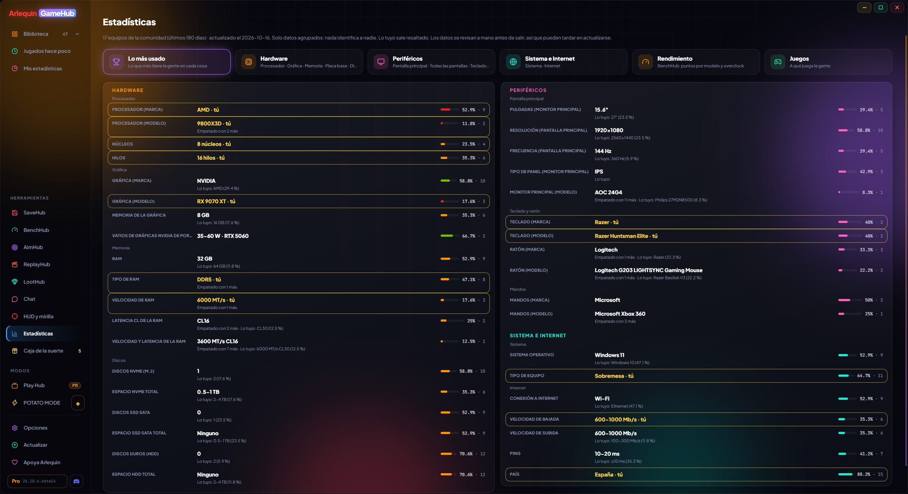

みんなで遊びながら作る
GameHubは他人のデータベースをコピーしません。独自のデータベースは、利用者のPCでプログラムが調べたことをもとに、匿名で、ご希望の場合のみ作られています。

遊ぶほどに育つデータベース
各ゲームのセーブデータの保存場所、ゲームかどうかの判別、グラフィックスカードごとのFPSなどを知るために、GameHubはゼロから作り上げています。
あなたのPCがすでに知っていること
GameHubは、各ストアがPCに保存している情報（たとえばSteamのクラウドルール）を読み取り、各ゲームのフォルダを探します。
遊びながら学習
ゲームのセーブ場所が分からないときは、プレイ中に書き込まれるファイルを監視して、セーブフォルダを学習します。
共有はご希望の場合のみ
「Arlequinの改善に協力」をオンにすると、そのパス、ハードウェア、FPSが匿名で送信されます。セーブデータ、ユーザー名、パスワードは決して送信されません。
確認してから公開
届いた内容は、公開データベースに入る前に確認されます。新しいバージョンが出ると、GameHubが自動でダウンロードします。
みんなが得をする
より多くのPCでゲームが自動的に見つかり、FPSの推定もより正確になります。
コミュニティの統計
GameHubで遊んでいる人たちが使っているグラフィックスカード、CPU、モニター、周辺機器。
Steamのハードウェア調査に似ていますが、より詳細です。RAMの速度とレイテンシ、モニターのパネルの種類とサイズ、キーボードとマウスのモデル、インターネット速度、仮想メモリなど。すべてパーセンテージで、個人を特定できるものは一切なく、各メーカーのカラーで表示されます。CPUとグラフィックスカードはゲーミング性能順に並び、あなた自身のものはハイライトされるので比較できます。
ユーザーが共有した情報から算出されます。ハードウェアを共有している人、またはArlequinProをお持ちの人に表示されます。
「最も多い構成」で全体を一目で確認でき、コントローラー、すべての画面（メインとサブ）、マザーボード、グラフィックスカードのメーカー、RAMプロファイル、さらにオーバークロックあり・なしのモデル別BenchHubポイントを見られるパフォーマンスタブもあります。
使い方
- サイドバーの ツール → 「統計」。
- GameHubをダウンロードした場所（Microsoft Storeまたはウェブサイト）で絞り込むこともできます。
- 各ドライブのメーカー、モデル、容量を表示する「ドライブ（モデル）」カードがあり、RAMは標準とOCを分けて表示します。
あなたのPCの推定FPS
遊ぶ前に、あなたと同じようなPCでゲームが何FPSになるかが分かります。
プレイヤーが計測したFPS（そのときのグラフィック設定と画面も含む）をもとに、GameHubはあなたに近いPCで各ゲームが画質ごと（低・中・高・ウルトラ）に何FPS出るか、そしてGPUとCPUのどちらがボトルネックかを算出します。ゲームのページで確認できます。
プレイヤーのデータが必要です。ゲームのデータが少ないうちは、推定値はSteamの必要スペックから算出した概算になります。コミュニティの値は、自分のセッションを共有している人、またはArlequinProをお持ちの人に表示されます。
使い方
- FPSを計測して（オプション → あなたのPC）、セッションを共有しましょう。
あなたのデータ、あなたが決める
共有されるのは匿名で任意の情報だけで、指標ごとにご自身で選べます。
「Arlequinの改善に協力」をオンにすると、GameHubはみんなの役に立つ情報を匿名で共有します。ゲームのセーブ場所（Documents/My Games/Gameのようなパス）、PCのハードウェア、FPSを計測した場合はセッションの概要です。セーブデータ、ユーザー名、パスワード、シリアル番号は決して共有されません。
共有する内容（パス、ハードウェア、画面、キーボードとマウス、インターネット、国、セッション）は1つずつ選べます。自分のデータはいつでも見られます。コミュニティのデータ（統計と推定FPS）は、その指標を共有している人、またはArlequinProをお持ちの人に表示されます。
使い方
- オプション → プライバシーとデータ。
- 詳細はすべてプライバシーポリシーに記載しています。